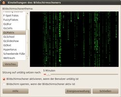
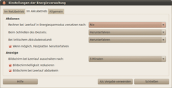
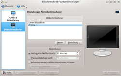
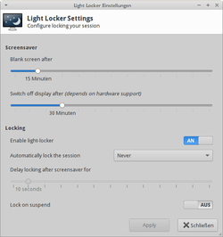
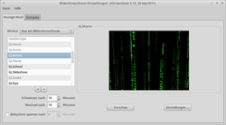
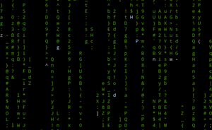

Bildschirmschoner
Zum Verständnis dieses Artikels sind folgende Seiten hilfreich:
Bildschirmschoner und Energieverwaltungen spielen bei Linux Hand in Hand. Während der Bildschirmschoner nach kürzerer Zeit meist aktiv wird und mit optischen Mitteln die Inaktivität spielerisch überbrückt, übernimmt die Energieverwaltung danach das Kommando und schaltet Bildschirme ab, um speziell bei Notebooks Energie zu sparen und somit die Akkulaufzeit zu erhöhen. Die eigentlichen Funktionen, d.h. das Aktivieren des Bildschirmschoners oder der Energieverwaltung (DPMS), übernimmt der X-Server. Die grafischen Verwaltungsprogramme dafür setzen auf diesen Funktionen auf, um benutzerfreundlichere Einstellungsmöglichkeiten oder weitere Funktionen bereitzustellen.
Unter Linux bringen die einzelnen Desktop-Umgebungen jeweils ihre eigenen Bildschirmschoner und Energieverwaltungen mit, wobei hier anzumerken ist, dass sich die Bildschirmschoner letztendlich immer aus dem großen Reservoir an Animationen des XScreenSavers bedienen. Sie binden die Effekte nur über eigene grafische Programme (Frontends) ein.
Hinweis:
Für den Anwender ist der Unterschied zwischen Bildschirmschoner und DPMS nicht sofort ersichtlich. Wenn der Bildschirmschoner aktiviert ist, aber keine Effekte als Ausgabe eingestellt sind, dann wird der Bildschirm nur abgedunkelt. Dieser schwarze Bildschirm wird gerne mit dem Bereitschaftsmodus des Monitors verwechselt, der vom DPMS gesteuert wird und letzten Endes ebenfalls einen schwarzen Bildschirm zeigt. Beschleicht einen also das Gefühl, dass die Einstellungen für DPMS nicht greifen, dann sollte man erst überprüfen, ob der Bildschirmschoner nicht die Ursache ist.
Sollte keine Bildschirmschonerverwaltung installiert sein, dann werden die Standardeinstellungen des X-Servers verwendet: Der Bildschirmschoner ist aktiviert und dunkelt den Bildschirm nach 10 Minuten ab. Dazu siehe auch den Abschnitt X-Server weiter unten.
Desktop-Umgebungen¶
Unity¶
Unter dem Desktop-Aufsatz Unity ist ab Ubuntu 11.10 kein Bildschirmschoner mehr installiert. Allerdings bringt Ubuntu 14.04 den GNOME Screensaver  wieder mit, welcher zu anderen Bildschirmschonern in Konkurrenz stehen kann und gegebenenfalls deinstalliert werden muss. Alternativ kann dann z.B. der XscreenSaver installiert werden.
wieder mit, welcher zu anderen Bildschirmschonern in Konkurrenz stehen kann und gegebenenfalls deinstalliert werden muss. Alternativ kann dann z.B. der XscreenSaver installiert werden.
GNOME 2¶
|  |
| GNOME Screensaver |
Bildschirmschoner¶
GNOME arbeitet mit einem eigenen Bildschirmschoner, dem GNOME Screensaver . Das dazugehörige Paket lautet:
gnome-screensaver
 mit apturl
mit apturl
Paketliste zum Kopieren:
sudo apt-get install gnome-screensaver
sudo aptitude install gnome-screensaver
Dieser ist vollständig in die Desktop-Umgebung eingebunden und wird auch direkt von GNOME-Programmen gesteuert. So bleibt der Bildschirmschoner beispielsweise inaktiv, wenn Totem ein Video im Vollbildmodus abspielt. Die Einstellungen findet man unter
"System -> Einstellungen -> Bildschirmschoner"
Hier kann man die verschiedenen Bildschirmschoner betrachten und testen, einen bestimmten Bildschirmschoner fest auswählen und den Bildschirmschoner über "Bildschirmschoner aktivieren, wenn der Benutzer untätig ist" (de-)aktivieren sowie den Bildschirm beim Einsetzen des Bildschirmschoner mittels "Bildschirm sperren, wenn der Bildschirmschoner aktiv ist" sperren lassen.
Um eine Diashow mit eigenen Bilder abzuspielen, siehe Diashow als Bildschirmschoner weiter unten. Bis Ubuntu 11.04 gab es daneben die Möglichkeit, XML-Slideshows abzuspielen. Diese Funktion ist in neueren Ubuntu-Versionen nicht mehr enthalten. Alternativen sind im Artikel Desktop-Hintergrund zu finden.
Lock-Dialog¶
Um den Dialog zur Aufhebung einer Bildschirmsperre ein eigenes Thema zuzuweisen, lädt man zuerst ein solches zum Beispiel auf Gnome-Look.org herunter. Als nächstes wird dieses Archiv entpackt [3] und die enthaltenen Dateien mit Root-Rechten ins Verzeichnis /usr/share/gnome-screensaver/ kopiert.
Zuletzt muss man das neue Thema aktivieren. Hierzu verwendet man entweder den Konfigurationseditor [4] und ändert dort den Wert des Schlüssels "lock_dialog_theme" unter "/apps/gnome-screensaver/lock_dialog_theme" in diesem Beispiel auf molke oder aber nutzt folgenden Befehl im Terminal:
gconftool-2 --set --type=string /apps/gnome-screensaver/lock_dialog_theme 'molke'
Den Namen des Themas, das eingetragen werden muss, sieht man am Namen der gtkrc- oder glade-Dateien. Sie haben immer den Aufbau lock-dialog-Themename.gtkrc (oder .glade).
Energieverwaltung¶
|  |
| GNOME Energieverwaltung |
Während der GNOME-Bildschirmschoner rein für optische Effekte und die Sperrung des Bildschirmes zuständig ist, so obliegt der Energieverwaltung die Aufgabe, den Bildschirm nach einer gewissen Zeit abzudunkeln bzw. ganz abzuschalten. Gerade auf einem Notebook sind diese Einstellungen sehr wichtig, um die Akkulaufzeit des Notebooks zu verbessern. Die Energieverwaltung findet man unter
"System -> Einstellungen -> Energieverwaltung"
Hier können jeweils für den Netz- und für den Akkubetrieb unter "Anzeige" unterschiedliche Einstellungen mittels "Bildschirm bei Leerlauf abdunkeln nach X Minuten" eingestellt werden.
KDE Plasma¶
Hinweis:
In KDE Plasma 5 ist gegenwärtig keine Funktion für einen Bildschirmschoner implementiert. Dies betrifft alle Kubuntu-Versionen seit 15.04.
|  |
| KDE Screensaver |
Bildschirmschoner¶
Auch KDE Plasma hat einen Bildschirmschoner eingebaut. Diesen findet man in den KDE Systemeinstellungen im Menü unter
"Menü -> Rechner -> Systemeinstellungen -> Anzeige und Monitor -> Bildschirmsperre"
Hier können verschiedene Bildschirmschoner ausgewählt und sogar individuell eingerichtet werden. Des weiteren können in den "Einstellungen" Zeitspannen definiert werden, wann der Bildschirmschoner aktiviert und wann der Bildschirm gesperrt werden soll.
Ab Kubuntu 9.04 muss folgendes Paket installiert werden, um überhaupt Bildschirmschoner zur Auswahl zu haben:
kscreensaver
mit apturl
Paketliste zum Kopieren:
sudo apt-get install kscreensaver
sudo aptitude install kscreensaver
Energiesparen¶
Die Energieverwaltung ist auch bei KDE ausgelagert. Man findet sie unter
"Menü -> Rechner -> Systemeinstellungen -> Erweitert -> Energieverwaltung"
Die Möglichkeiten zum individuellen Konfigurieren der Energieverwaltung ist im Artikel zur KDE Energieverwaltung beschrieben.
Xfce¶
|  |
| Light-Locker |
Xubuntu nutzt den XScreenSaver als Bildschirmschoner (falls installiert; ansonsten siehe xfce4-power-manager). Dieser schaltet sich ein, wenn Maus oder Tastatur einige Zeit nicht genutzt werden. Die Zeitintervalle zur Aktivierung können in den Xfce Einstellungen verändert werden. Man findet diese im Anwendungsmenü unter
"Einstellungen -> Einstellungsmanager -> Bildschirmschoner"
Ab Xubuntu 14.04 ist stattdessen Light-Locker vorinstalliert. Dieser übernimmt die Einstellungen für den Bildschirmschoner (Regler oben: „Blank screen after“). Möchte man den Bildschirmschoner deaktivieren, dann muss dieser Regler ganz nach links auf „Niemals“ gestellt werden. Zusätzlich kann auch die Zeitspanne ohne Benutzeraktivität für den Bereitschaftsmodus (DPMS Standby) des Monitors eingestellt werden (Regler unten „Switch off display after“). Das überschneidet sich allerdings mit den Monitor-Einstellungen im xfce4-power-manager (Regler oben: „Anzeige schlafen legen, wenn der Computer inaktiv ist für“). Unglücklicherweise vermittelt der Einstellungsdialog von Light-locker, der Bildschirm würde abgeschaltet, geht aber nur in den Bereitschaftsmodus. Die tatsächlichen Einstellung zum Abschalten finden sich wiederum im xfce4-power-manager.
Zusätzlich übernimmt Light-locker auch die Funktion einer Bildschirmsperre, und man kann festlegen, ob nach dem Aufwachen das Kennwort zum Freischalten des Bildschirms eingegeben werden muss
Hinweis:
XScreenSaver und Light-Locker dürfen nicht gleichzeitig installiert sein (1304128). Möchte man den XScreenSaver verwenden, sollte Light-Locker deinstalliert werden (und umgekehrt).
XScreenSaver¶
|  |
| XScreenSaver |
XScreenSaver ist der klassische Bildschirmschoner unter Linux. Sämtliche Bildschirmschoner der verschiedenen Desktop-Umgebungen bedienen sich letztendlich aus dem großen Reservoir an Bildschirmschonern und Effekten des XScreenSaver.
Der XScreenSaver selber muss nur installiert werden, wenn man keine Desktop-Umgebung wie GNOME oder KDE installiert hat. Diese verwenden eigene Konfigurationsprogramme. Sollte man einen reinen Fenstermanager nutzen oder eine eigene Desktopumgebung erstellt haben, so muss das unten stehende Paket installiert werden.
Hinweis:
Ubuntu 14.04 enthält automatisch den GNOME Screensaver . Dieser darf nicht gleichzeitig mit dem XScreenSaver installiert sein. Möchte man den XScreenSaver verwenden, muss der gnome-screensaver vollständig deinstalliert werden.
xscreensaver (ab Ubuntu 13.04 in universe)
mit apturl
Paketliste zum Kopieren:
sudo apt-get install xscreensaver
sudo aptitude install xscreensaver
Dazu kommen noch die einzelnen Bildschirmschoner, die in eigene Pakete ausgelagert sind:
xscreensaver-data
xscreensaver-data-extra (universe)
mit apturl
Paketliste zum Kopieren:
sudo apt-get install xscreensaver-data xscreensaver-data-extra
sudo aptitude install xscreensaver-data xscreensaver-data-extra
Nutzt man einen schwächeren Rechner ohne Grafikkarte mit Hardwarebeschleunigung, so sollte man auf die folgenden Pakete verzichten. Diese Bildschirmschoner benutzen Effekte, die ältere Grafikkarten nicht beherrschen:
xscreensaver-gl
xscreensaver-gl-extra (universe )
rss-glx (universe, GLX Port der Really Slick Screensavers
)
mit apturl
Paketliste zum Kopieren:
sudo apt-get install xscreensaver-gl xscreensaver-gl-extra rss-glx
sudo aptitude install xscreensaver-gl xscreensaver-gl-extra rss-glx
Hinweis:
Die Bildschirmschoner aus dem Paket rss-glx werden nicht automatisch in den Einstellungen zum XScreensaver angeboten, sondern müssen erst in der Datei ~/.xscreensaver eingetragen werden. Eine Anleitung dazu findet sich in der Datei /usr/share/doc/rss-glx/README.xscreensaver.
XScreenSaver wird nach der Installation mittels des Befehls [1]
xscreensaver
gestartet. Konfigurationen für den XScreenSaver können über das graphische Programm
xscreensaver-demo
vorgenommen werden.
Um den XScreenSaver automatisch starten zu lassen, muss er noch zu den Startprogrammen hinzugefügt werden. Um einen fehlerfreien Start zu ermöglichen, sollte zunächst der Anmeldevorgang vollständig abgeschlossen sein. Daher ist in dem Befehl eine Verzögerung von zehn Sekunden vorgeschaltet. In der Befehlszeile der Startprogramme wird also folgendes eingetragen:
sh -c "sleep 10 && xscreensaver -no-splash &"
Diashow als Bildschirmschoner¶
Mit der "GLSlideshow" können Bilder in zufälliger Reihenfolge als Bildschirmschoner benutzt werden. Spätestens ab Ubuntu 11.10 kann man damit ganz komfortabel unter "Komplex" einen Bilderordner auswählen. Bei älteren Versionen werden standardmäßig einige Bilder aus dem Ordner /usr/share/backgrounds wiedergegeben. Möchte man einen eigenen Bilderordner nutzen, muss eine Datei ~/.xscreensaver mit folgendem Inhalt im Homeverzeichnis angelegt werden:
chooseRandomImages: true imageDirectory: /home/BENUTZER/BILDERORDNER
wobei der BENUTZERNAME und der Pfad BILDERORDNER entsprechend angepasst werden müssen.
Hinweis:
Die Diashow durchsucht das angegebene Verzeichnis nur einmal und merkt sich die Pfade der gefundenen Bilder in der Textdatei ~/.xscreensaver-getimage.cache. Fügt man Bilder oder Verzeichnisse hinzu, entfernt sie oder ändert den Pfad, sollte man diese Datei löschen; sie wird dann automatisch neu angelegt. Möglicherweise lässt sich die Datei auch dazu verwenden, um gezielt einzelne Bilder von der Diashow auszunehmen oder hinzuzufügen.
Weitere Programmvorschläge für eine Diashow sind im Artikel Desktop-Hintergrund enthalten. Diese Programme arbeiten allerdings im Regelfall nicht als "Bildschirmschoner".
Nützliche Befehle¶
Weitere nützliche Befehle rund um den XScreenSaver kann man folgender Liste entnehmen. Sämtliche xscreensaver-command-Befehle funktionieren nur, wenn der XScreenSaver zuvor gestartet wurde.
| XScreenSaver | |
| Befehl | Bedeutung |
xscreensaver -no-splash | Startet den XScreenSaver ohne Splash-Screen. |
xscreensaver-command -next | Startet den Bildschirmschoner mit dem nächsten Thema. |
xscreensaver-command -prev | Startet den Bildschirmschoner mit dem vorherigen Thema. |
xscreensaver-command -activate | Startet den Bildschirmschoner mit einem beliebigen Thema. |
xscreensaver-command -demo | Ruft die Einstellungen auf. |
xscreensaver-command -prefs | Ruft ebenfalls die Einstellungen auf. |
xscreensaver-command -exit | Beendet den XScreenSaver Daemon (Der Bildschirmschoner wird nicht automatisch nach einiger Zeit neu gestartet. Um den Daemon neu zu starten, verwendet man den Befehl screensaver.) |
xscreensaver-command -deactivate | Deaktiviert den aktuellen laufenden Bildschirmschoner, ohne den Daemon zu beenden. |
xscreensaver-command -activate | Aktiviert den Bildschirmschoner. |
xscreensaver-command -restart | Startet XScreenSaver neu (nicht zu verwechseln mit dem Neustart des Daemon). |
xscreensaver-command -lock | Startet einen Bildschirmschoner und sperrt den Bildschirm. Um wieder auf die Arbeitsfläche zu gelangen, muss das Benutzer-Passwort eingegeben werden. |
X-Server¶
Hinweis:
Die hier genannten Optionen sind generell nur für VESA-kompatible Bildschirme geeignet und werden auch nicht von allen Videotreibern unterstützt. Man muss also ausprobieren, ob diese Einstellungen auf dem eigenen System überhaupt eine Wirkung zeigen.
Sollte keine grafische Bildschirmschoner- oder Energieverwaltung installiert bzw. gestartet sein, dann arbeitet der X-Server mit seinen Standardeinstellungen. Er erkennt automatisch die Stromsparmöglichkeiten des Monitors und aktiviert DPMS, wenn verfügbar. Ebenso ist ein interner Bildschirmschoner, wie eingangs im Artikel erwähnt, aktiviert. Diese Funktionen lassen sich mit dem standardmäßig vorinstallierten Kommandozeilenwerkzeug xset steuern [1]:
Aktuelle Einstellungen ausgeben:
xset q
DPMS deaktivieren:
xset -dpms
DPMS wieder aktivieren:
xset +dpms
DPMS aktivieren und die Zeitspannen für Standby, Suspend und Off setzen (Angabe muss in Sekunden erfolgen):
xset +dpms dpms 600 1200 1800
Bildschirmschoner deaktivieren:
xset s off
Bildschirmschoner wieder aktivieren:
xset s on
Für weitere Details zu xset verwendet man die Manpage.
Diese Einstellungen werden nur temporär übernommen und verfallen mit dem nächsten Neustart des X-Servers bzw. werden beim nächsten Sitzungsstart wieder von den grafischen Einstellungsdialogen überschrieben. Sofern keine weiteren Verwaltungsprogramme für Bildschirmschoner oder zur Energieverwaltung installiert sind, kann man diese Befehle als Alternative in den Autostart des Benutzers eintragen. Sie lassen sich auch gut in Skripten verwenden, wenn bspw. DPMS vorübergehend deaktiviert werden soll, um ungestört einen längeren Film schauen zu können. Ein Beispiel, das den Benachrichtigungsdienst nutzt:
1 2 3 4 5 6 7 8 9 | #!/bin/bash if xset -q | fgrep -q 'DPMS is Enabled' then xset -dpms s off notify-send -i dialog-information "DPMS OFF" "Display Power Management deaktiviert." else xset +dpms s on notify-send -i dialog-information "DPMS ON" "Display Power Management aktiviert." fi |
Diesen Code speichert man z.B. als Datei ~/bin/dpms im Homeverzeichnis. Anschließend macht man die Datei ausführbar.
Eine andere Methode ist, die DPMS-Optionen in der Datei /etc/X11/xorg.conf festzulegen. Hier werden die Zeitspannen, nach denen der Monitor in einen der Modi Standby, Suspend oder Off geschaltet wird, in Minuten angegeben:
Section "Monitor" Option "DPMS" "true" [...] Section "ServerLayout" Option "StandbyTime" "10" Option "SuspendTime" "20" Option "OffTime" "30" [...]
Damit eine Änderung greift, muss der X-Server neu gestartet werden.
Kommandozeile¶
Auch für die Kommandozeile gibt es Bildschirmschoner.
cmatrix¶

cmatrix zeichnet einen, wie der Name vermuten lässt, aus dem Film Matrix bekannten Effekt.
Installation¶
cmatrix (universe)
mit apturl
Paketliste zum Kopieren:
sudo apt-get install cmatrix
sudo aptitude install cmatrix
cmatrix-xfont (universe, optional)
mit apturl
Paketliste zum Kopieren:
sudo apt-get install cmatrix-xfont
sudo aptitude install cmatrix-xfont
| Tastenkombinationen | ||
| Taste | Funktion | |
| A | Schaltet asynchrones scrollen an | |
| B | Einige Buchstaben in Fettdruck (bold) ausgeben | |
| ⇧ + B | Alle Buchstaben in Fettdruck (bold) ausgeben | |
| N | Ausgabe in Fettdruck (bold) wieder ausschalten | |
| 0 ... 9 | Scrollgeschwindigkeit, 0 schnell ... 9 langsam | |
| ! | Farbe: Rot | |
| @ | Farbe: Grün | |
| # | Farbe: Gelb | |
| ⇧ + 4 = $ | Farbe: Blau | |
| % | Farbe: Magenta | |
| ^ | Farbe: Cyan | |
| & | Farbe: Weiß | |
| ⇧ + 9 = ) | Farbe: Schwarz | |
| Q | Beenden | |
Weitere Einstellungen und Optionen finden sich in der manpage zu cmatrix, auch online abrufbar ist: cmatrix .
Hinweis:
Lt. manpage, Sektion BUG kann das Programm cmatrix eine Systemlast von bis zu 40% verursachen.
TermSaver¶
TermSaver ist ein textbasierter Bildschirmschoner. Ab Ubuntu 12.10 kann das Programm direkt aus den offiziellen Paketquellen installiert werden:
termsaver (universe)
mit apturl
Paketliste zum Kopieren:
sudo apt-get install termsaver
sudo aptitude install termsaver
Die aktuelle Version ist über ein PPA verfügbar, das auch ältere Ubuntu-Versionen unterstützt. Weitere Informationen sind im Blogbeitrag Text Based Screensaver for the Command-line zu finden.
Problembehebung¶
Bildschirm wird während der Video-Wiedergabe schwarz¶
Falls während der Wiedergabe von Videos oder TV ein Bildschirmschoner anspringt, kann in manchen Fällen Caffeine weiterhelfen.
Verantwortlich kann aber auch die Energieverwaltung des X-Servers sein, die bei der Wiedergabe vom jeweiligen Abspielprogramm nicht deaktiviert wird. Dafür kann man bspw. ein Umschaltskript verwenden (siehe den Abschnitt X-Server weiter oben), dass DPMS bei Bedarf de-/aktiviert, wenn man dazu nicht jedes Mal die Energieverwaltung der Desktopumgebung öffnen möchte.
Bildschirm nach 5-10 min schwarz¶
Dieses Problem hat im Grunde dieselbe Ursache wie bei der Videowiedergabe: Nach einer gewissen Zeit Inaktivität an Benutzereingaben wird der Bildschirm schwarz. Das Problem kann aber auch nach Bereitschaft oder Ruhezustand auftreten, weil danach die Bereitschaftszeit zurückgesetzt ist, etwa bei Xubuntu oder Lubuntu 14.04.
Eine systematisch korrekte Lösung sollte normalerweise wie im Abschnitt X-Server erfolgen oder via rc.local bzw. pm-utils die Zeit mittels etwa
xset dpms 3000 3600 3600
erneut korrekt setzen (hier: Sekunden bis Standby/ Bereitschaft/ Aus), alternativ gibt es jedoch eine einfachere Lösung, welche nur folgenden Eintrag im Autostart erfordert:
bash -c "while true; do xset -dpms; sleep 3m; done"
Damit wird allerdings diese Energieverwaltung des Bildschirms komplett deaktiviert und wegen teils auftretendem unzuverlässigem Verhalten der Bildschirm-Bereitschaft oder wegen der beiden genannten Energiesparmodi diese Einstellung alle 3 min wiederholt, um es zuverlässig zu deaktivieren.
Links¶
GNOME
 Übersichtsartikel
ÜbersichtsartikelKDE
ÜbersichtsartikelLXDE
ÜbersichtsartikelXfce
ÜbersichtsartikelClock screensaver
- während KDE eine Analoguhr als Bildschirmschoner mitbringt, fehlt diese Möglichkeit unter GNOME. Angeboten werden der Quellcode für GNOME und ein Patch für XScreenSaver.ctaas.de/linux-install.htm einen transparenten Bildschirmschoner
 unter Xubuntu installieren
unter Xubuntu installieren
- Erstellt mit Inyoka
-
 2004 – 2017 ubuntuusers.de • Einige Rechte vorbehalten
2004 – 2017 ubuntuusers.de • Einige Rechte vorbehalten
Lizenz • Kontakt • Datenschutz • Impressum • Serverstatus -
Serverhousing gespendet von